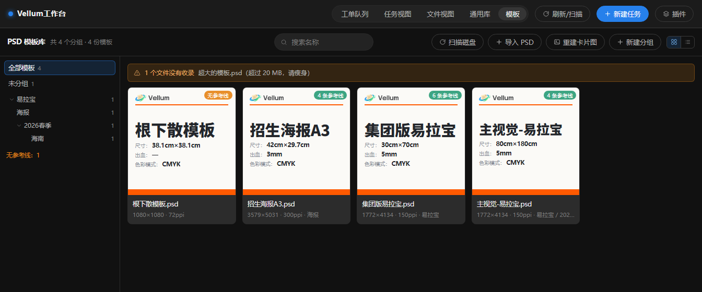
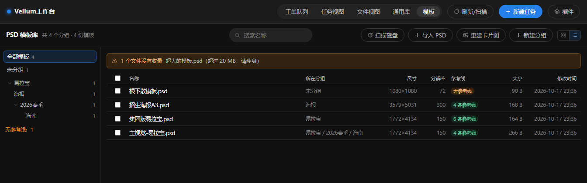

VELLUM / VELLUMDESK
01 / DESKTOP · WINDOWS
软件里看到的，
就是硬盘上的。
项目、任务、版本、三组目录一一对应。扫描磁盘就能把散落的文件认领回来，删掉记录也不会动你的文件。
本地 SQLite + 本地文件，不上云。

参考线 4 条 / 尺寸 80×180 cm
CORE / 四个能力
把「找东西」变成「看得到」。
不是网盘，也不是素材网站。它按你硬盘上的目录工作：任务、版本、三组文件夹，软件里看到的就是实际存在的东西。
01
任务与版本
一稿一个文件夹，回滚只改指针，文件不动。新建任务自带 V1。
02
素材与模板
通用库与 PSD 模板库；参考线、尺寸、出血从 PSD 关键词直接读。
03
工单与交付
企微工单同步；按版本打包交付，备份留痕，删记录不动文件。
04
本地优先
SQLite + 本地文件；整个工作区文件夹拷走就能换机器。

FIG. 02 / 模板库 · 列表视图1344 × 420
CONTRACT / 工作方式
三条规矩，写进目录里。
VellumDesk 不靠培训让同事「记得分类」，而是把规矩落在文件夹上。最坏的结果是待办清单变长，不是文件消失。
- 软件视图 = 磁盘现实
软件里看到的任务、版本、三组，硬盘上就有对应文件夹。 - 永不静默丢弃
删记录、清筛选、移除素材，都不动磁盘上的原文件。 - 不替用户做决定
认领、归位、解绑、删项目，都由你确认后才发生。
| 平台 | Windows 10 / 11（64 位） |
|---|---|
| 当前版本 | 1.11.0 |
| 安装包 | 约 186 MB · VellumDesk-1.11.0-Setup.exe |
| 数据 | 本地 SQLite + 本地文件；工作区可整体搬走 |
| 发布 | GitHub Releases（v1.11.0-pslink） |
| 签名 | 未签名；SmartScreen 提示时选「更多信息 → 仍要运行」 |
INSTALL / 安装
四步，开始归档。
下载安装包
从 GitHub Release 下载 VellumDesk-1.11.0-Setup.exe（约 186 MB）。
双击安装
Windows 提示「已保护你的电脑」时，点「更多信息 → 仍要运行」。
选择工作区
首次启动选一个本地文件夹（例如 D:\vellum_workspace），所有素材和数据库都放进去。
建第一个任务
新建任务 → 软件在硬盘上长出 V1\01-成品 / 02-素材 / 03-工程。
换机器：关掉软件，把整个工作区文件夹拷到新机器，再在软件里「添加工作区」指过去即可。数据库、素材、缩略图都在里面。
别手动改数据库：软件以磁盘为唯一真相。需要清理记录时，用界面里的「清除记录 / 删除 / 回收站」，不要直接动 SQLite。